1. DIKW 피라미드 (원본 p.4-6)
DIKW 피라미드는 데이터가 정보·지식·지혜로 위계적으로 승화되는 과정을 표현한 모형이다.
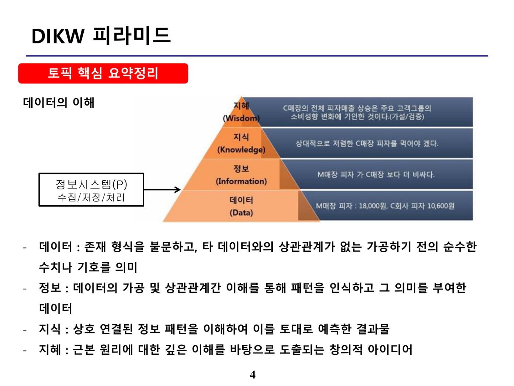
| 단계 | 정의 |
|---|---|
| 데이터(Data) | 존재 형식을 불문하고, 타 데이터와의 상관관계가 없는 가공하기 전의 순수한 수치나 기호 |
| 정보(Information) | 데이터의 가공 및 상관관계간 이해를 통해 패턴을 인식하고 그 의미를 부여한 데이터 |
| 지식(Knowledge) | 상호 연결된 정보 패턴을 이해하여 이를 토대로 예측한 결과물 |
| 지혜(Wisdom) | 근본 원리에 대한 깊은 이해를 바탕으로 도출하는 창의적 아이디어 |
2. 데이터베이스의 특성 (원본 p.7-11)
가. 데이터베이스의 정의
데이터베이스란 한 조직의 여러 응용시스템이 공용(Shared)할 수 있도록 통합(Integrated)·저장(Stored)된 운영(Operational) 데이터의 집합이다. 정보통신용어사전(TTA)에서는 동시에 복수의 적용 업무를 지원할 수 있도록 복수 이용자의 요구에 대응해 데이터를 받아들이고 저장·공급하기 위해 일정한 구조에 따라 편성된 데이터의 집합으로 정의하며, 저작권법에서는 소재를 체계적으로 배열 또는 구성한 편집물로서 개별적으로 그 소재에 접근하거나 검색할 수 있도록 한 것으로 정의한다.
| 구성 개념 | 설명 |
|---|---|
| 통합된 데이터(Integrated data) | 최소의 중복 또는 통제된 중복 |
| 저장된 데이터(Stored data) | 컴퓨터가 접근할 수 있는 저장매체에 저장된 데이터 |
| 운영 데이터(Operational data) | 조직 고유의 기능을 수행하기 위해 반드시 유지되어야 하는 데이터 |
| 공용 데이터(Shared data) | 조직의 여러 응용시스템들이 공동으로 소유하고 유지·이용하는 데이터 |
나. 데이터베이스의 4대 특성
| 특성 | 설명 |
|---|---|
| 실시간 접근성(Real-Time Accessibility) | 수시적이고 비정형적인 질의(Query)에 대하여 실시간 처리로 응답 |
| 계속적인 변화(Continuous Evolution) | 항상 변하는 현실 세계를 반영 |
| 동시 공용(Concurrent Sharing) | 여러 사용자가 동시에 자기가 원하는 데이터에 접근·이용 |
| 내용에 의한 참조(Content Reference) | 사용자가 요구하는 데이터의 내용, 즉 데이터가 가지고 있는 값에 따라 참조 |
3. DBMS 구성요소 (원본 p.12-14)
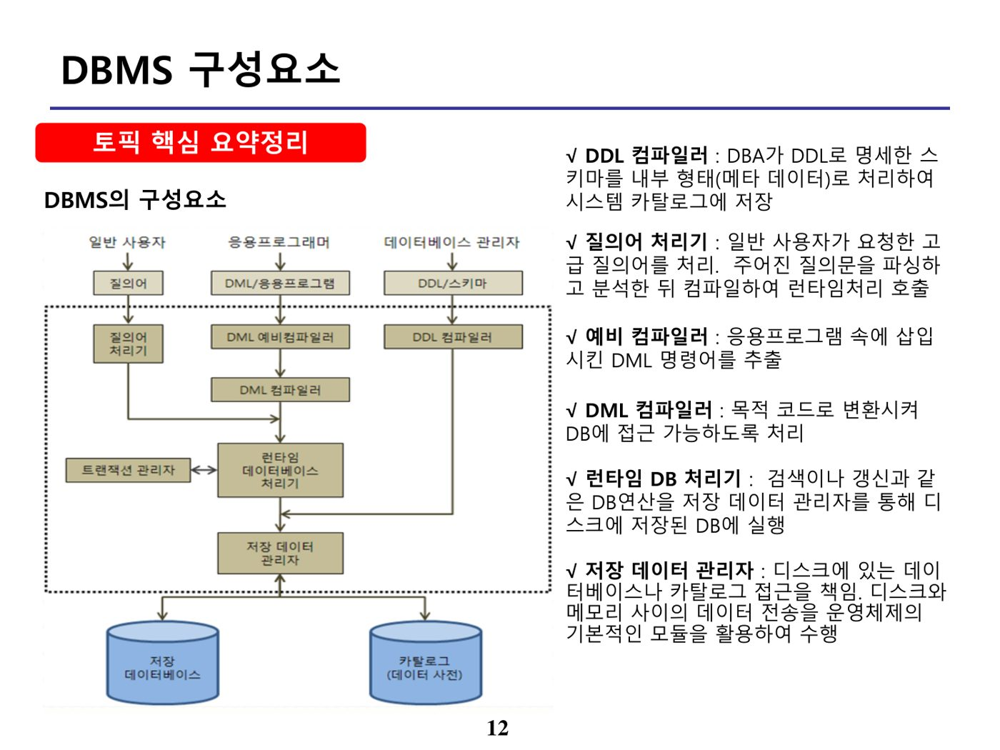
| 구성요소 | 역할 |
|---|---|
| 예비 컴파일러(Precompiler) | 응용 프로그램 속에 삽입된 DML 명령어를 추출 |
| DML 컴파일러 | 추출된 DML 명령어를 목적 코드로 변환 |
| DDL 컴파일러 | DDL로 명세한 스키마를 내부 형태로 처리하여 데이터 사전에 저장 |
| 런타임 DB 처리기 | 검색이나 갱신과 같은 DB 연산을 저장 데이터 관리자를 통해 디스크에 저장된 DB에 실행 |
| 저장 데이터 관리자 | 디스크에 있는 데이터베이스나 카탈로그(데이터 사전) 접근을 책임 |
4. 트랜잭션 특성(ACID) (원본 p.15-17)
| 특성(ACID) | 설명 |
|---|---|
| Atomicity(원자성) | 트랜잭션은 완전히 수행되거나 전혀 수행되지 않는 상태로 회복되어야 함(All or Nothing) — Commit/Rollback 연산으로 보장 |
| Consistency(일관성) | 트랜잭션이 실행을 성공적으로 완료하면 언제나 모순 없는 일관성 있는 데이터베이스 상태를 보존 |
| Isolation(고립성) | 트랜잭션이 실행 중에 생성하는 연산의 중간 결과를 다른 트랜잭션이 접근할 수 없음 |
| Durability(영속성) | 성공적으로 완료된 트랜잭션의 결과는 데이터베이스에 지속적으로 보존됨 |
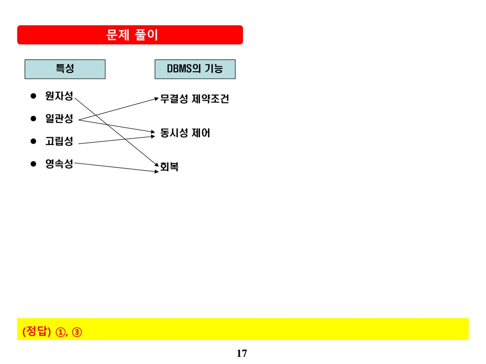
트랜잭션의 각 특성은 DBMS의 특정 기능에 의해 보장된다. 원자성(Atomicity)과 영속성(Durability)은 회복(Recovery) 기능으로, 일관성(Consistency)은 무결성 제약조건으로, 고립성(Isolation)은 동시성 제어 기능으로 보장되며, 이 대응 관계를 서로 뒤바꿔 서술하는 것이 전형적인 오답 패턴이다.
5. Isolation Level (원본 p.18-20)
| 고립 수준 | 설명 |
|---|---|
| Read Uncommitted(레벨0) | 트랜잭션에서 처리 중인, 아직 commit하지 않은 데이터를 다른 트랜잭션에서 읽는 것을 허용 |
| Read Committed(레벨1) | 대부분의 DBMS가 기본 모드로 채택하는 일관성 모드. 트랜잭션이 commit되어 확정된 데이터만 읽는 것을 허용 |
| Repeatable Read(레벨2) | 선행 트랜잭션이 읽은 데이터를 후행 트랜잭션이 갱신·삭제하지 못하도록 제한 |
| Serializable Read(레벨3) | 선행 트랜잭션이 읽은 데이터를 종료할 때까지 후행 트랜잭션의 갱신·삭제를 제한하고, 중간에 새로운 레코드의 삽입도 제한해 완벽한 읽기 일관성을 제공 |
| 고립 수준 | Dirty Read | Non-Repeatable Read | Phantom Read |
|---|---|---|---|
| Read Uncommitted(Level 0) | 가능 | 가능 | 가능 |
| Read Committed(Level 1) | 불가능 | 가능 | 가능 |
| Repeatable Read(Level 2) | 불가능 | 불가능 | 가능 |
| Serializable(Level 3) | 불가능 | 불가능 | 불가능 |
6. 교착상태 (원본 p.21-23)
교착상태(Deadlock)란 모든 트랜잭션들이 실행을 전혀 진전시키지 못하고 무한정 기다리고 있는 상태를 말한다.
| 구분 | 내용 |
|---|---|
| 발생 조건(4가지 모두 충족 시 발생) | 상호배제, 점유와 대기, 비선점(선취금지), 순환대기 |
| 해결책 | 회피(Avoidance), 예방(Prevention), 탐지(Detection), 회복(Rollback) |
| 교착상태 방지 프로토콜 | 설명 |
|---|---|
| Wait-Die 기법 | 요청자가 기득권자보다 고참(선행)이면 기득권자가 종료될 때까지 기다림(Wait). 요청자가 신참(후행)이면 죽고(Die-Rollback) 다시 시작함 — 불필요한 복귀가 자주 발생할 소지가 있음 |
| Wound-Wait 기법 | 요청자가 기득권자보다 고참이면 기득권자를 종료(Wound-Rollback)시킴. 요청자가 신참이면 기득권자가 종료될 때까지 기다림(Wait) |
- 교착상태 발생 조건은 상호배제·점유와 대기·비선점·순환대기 4가지를 모두 만족해야 하며, "하나만 만족하면 발생"이라는 서술은 틀렸다.
- 자원할당 그래프와 은행원 알고리즘은 예방(Prevention)이 아니라 탐지(Detection)·회피(Avoidance) 기법에 해당한다.
- Wait-Die 기법에서 요청자가 기득권자보다 고참이면 기다린다(Wait). 반대로 "종료(Die)된다"는 설명은 Wound-Wait 기법과 혼동한 오답이다.
7. 다중버전 병행제어(MVCC) (원본 p.24-27)
다중버전 병행제어 기법(Multi-Version Concurrency Control)은 공유 Lock의 한계를 극복하기 위해 변경 전 데이터를 UNDO 영역(롤백 세그먼트)에 저장하고, 시간별 버전 관리로 읽기와 쓰기의 충돌을 최소화하려는 동시성 제어 기법이다.
| MVCC 유형 | 설명 |
|---|---|
| MV Timestamp Ordering | Timestamp를 시간 순서에 따라 부여하여 동시성 제어 기준으로 사용 |
| MV 2-Phase Locking | 데이터 항목에 R(읽기), W(쓰기), C(보증)의 세 가지 잠금 모드를 사용 |
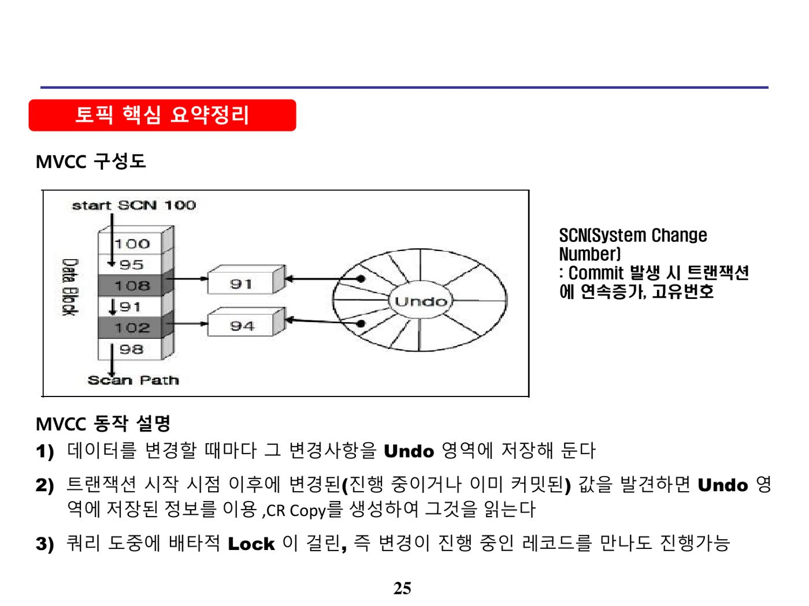
MVCC의 동작 절차는 ① 데이터 변경 시마다 변경분을 Undo 영역에 저장 → ② 트랜잭션 시작 시점(SCN) 이후에 변경되었거나 아직 커밋되지 않은 데이터를 발견하면 Undo 영역에서 값을 가져오는 방식으로 읽음(일관성 읽기) → ③ 위처럼 동일 시점 이후의 Lock이 걸린 데이터를 읽어야 하는 트랜잭션은 Undo 영역의 이전 버전을 참조해 진행하는 순서로 이루어진다.
8. 그림자 페이지 기법 (원본 p.28-30)
그림자 페이지 기법(Shadow Paging)은 트랜잭션 실행 동안 현재의 페이지 테이블(Current Table)과 그림자 페이지 테이블(Shadow Page Table)의 2개 테이블을 유지하는 회복 기법이다.
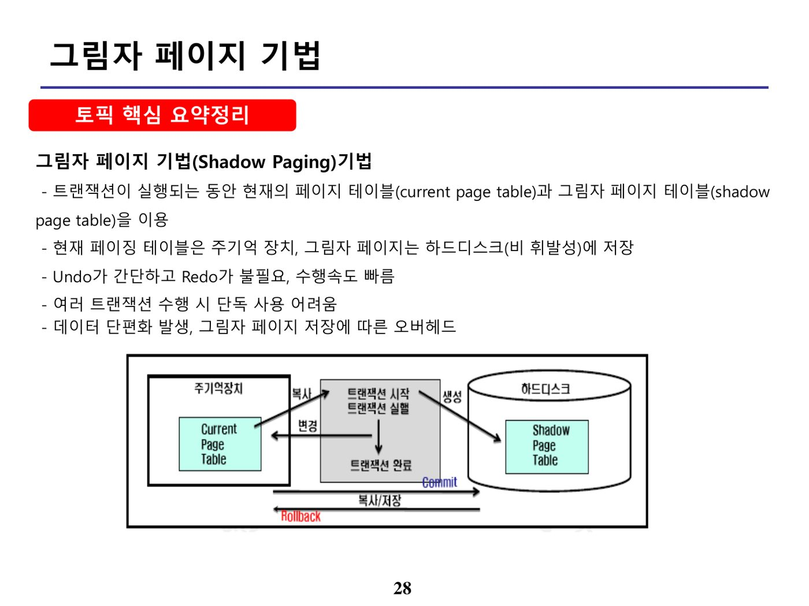
| 구분 | 내용 |
|---|---|
| 절차 | 현재 페이지 테이블은 주기억 장치에, 그림자 페이지 테이블은 하드디스크(비휘발성)에 저장. Undo가 간단하고 Redo가 불필요하여 수행속도가 빠름 |
| 한계 | 여러 트랜잭션 수행 시 단독 사용이 어렵고, 데이터 단편화가 발생하며 그림자 페이지 저장에 따른 오버헤드가 존재함 |
9. 데이터 모델링 3요소 (원본 p.31-33)
| 요소 | 설명 |
|---|---|
| 엔티티(Entity) | 업무가 다루는 사물(대상). 하나로 묶을 수 있는 공통 성격을 갖는, 관리하고 있거나 관리하고자 하는 데이터 집합. 어떻게 정의하느냐에 따라 집합의 성격이 달라짐 |
| 속성(Attribute) | 특정 엔티티의 본질을 이루는 고유한 특성이나 성질로, 엔티티 내에서 관리하고자 하는 정보 항목들. 모든 속성은 사전에 정해진 규칙에 따라 나타내는 정보와 사용 목적을 정확히 기술해야 하며, 지나친 반정규화는 고비용과 성격 변질의 원인이 됨 |
| 관계(Relationship) | 엔티티 간의 업무적 연관성 표현. 관계명, 기수성(Cardinality), 선택성(Optionality)으로 업무적 연관성을 표현하며, 데이터의 참조무결성을 보장하기 위한 중요한 업무 규칙 |
10. 데이터베이스 카디널리티(Cardinality) (원본 p.34-38)
카디널리티(Cardinality)란 두 개의 엔티티 타입 사이의 논리적인 관계, 즉 엔티티 타입이 존재하는 형태로써 최종 행태로써 서로에게 영향을 줄 수 있는 상태를 말한다.
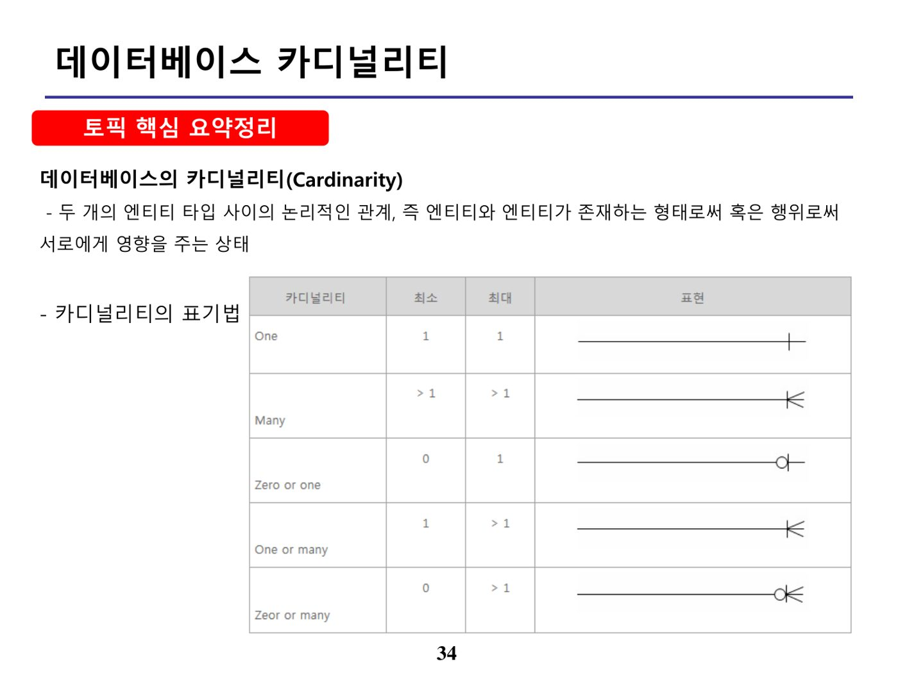
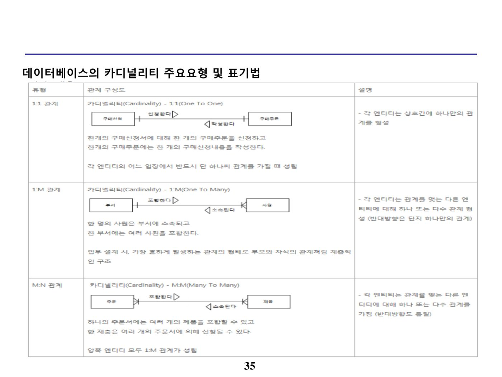
| 참여 방법 | 내용 |
|---|---|
| 필수 관계 | 참여하는 모든 참여자가 반드시 관계를 가지는, 타 엔티티 타입의 참여자와 연결되어야 하는 관계 |
| 선택 관계 | ER-D에서 관계를 나타내는 선에서 선택 참여하는 엔티티 타입 쪽을 원(circle)으로 표시 |
| 구분 | 사례 | 설명 |
|---|---|---|
| High Cardinality | 주민번호, 사원번호 | 대한민국 전체가 서로 다른 값을 보유하는 등 유일성이 매우 높은 데이터 |
| Normal Cardinality | 이름의 성 컬럼 | 비교적 유니크한 데이터 값 |
| Low Cardinality | 성별, 부서, 지역 | 성별 속성처럼 남자·여자 등 소수의 값만 존재 |
1:1 관계는 각 엔티티의 어느 입장에서든 반드시 하나씩만 관계를 가질 때 성립하며, 1:M 관계는 부모와 자식의 관계처럼 계층적인 구조를 가진다. M:N 관계는 관계형 데이터베이스에서 직접 표현할 수 없으므로 별도의 교차 엔티티(연결 테이블)를 통해 반드시 해소하여야 한다.
11. 식별관계 Vs 비식별 관계 (원본 p.39-41)
| 구분 | 식별 관계 | 비식별 관계 |
|---|---|---|
| 목적 | 강한 연결관계 표현 | 약한 연결관계 표현 |
| 자식 주식별자 영향 | 자식 주식별자의 구성에 포함됨 | 자식의 일반 속성에 포함됨 |
| 표기법 | 실선 표현 | 점선 표현 |
| 연결 고려사항 | 반드시 부모 엔티티에 종속 — 자식 주식별자 구성에 부모 주식별자 포함 필요, 상속받은 주식별자 속성을 타 엔티티에 이전 필요 | 약한 종속관계 — 자식 주식별자 구성을 독립적으로 구성, 부모 주식별자는 일반 속성으로만 포함, 상속받은 주식별자 속성을 타 엔티티에 차단 필요, 부모 쪽 관계 참여가 선택관계 |
12. 정보 요구사항 수명주기 (원본 p.42-44)
| 단계 | 내용 |
|---|---|
| 정보 요구사항 수집 | 사용자의 정보 요구사항을 수집하는 단계로서, 사용자 인터뷰·설문지·워크숍·현행 시스템 분석 등을 통해 수집 |
| 정보 요구사항 분석 및 정의 | 사용자로부터 수집된 정보 요구사항을 정리하고, 방법론에서 제시하는 다양한 기법으로 분석하여 정의 |
| 정보 요구사항 상세화 | 확정된 정보 요구사항의 개별 사항에 대하여 세밀하게 분석하고 기록하는 단계 |
| 정보 요구사항 검증 | 사용자의 정보 요구사항을 비즈니스 관점·조직 관점·애플리케이션 관점과 상관분석을 통해 누락 없이 반영되었는지 검증하는 단계 |
13. 데이터 모델링 단계 (원본 p.45-48)
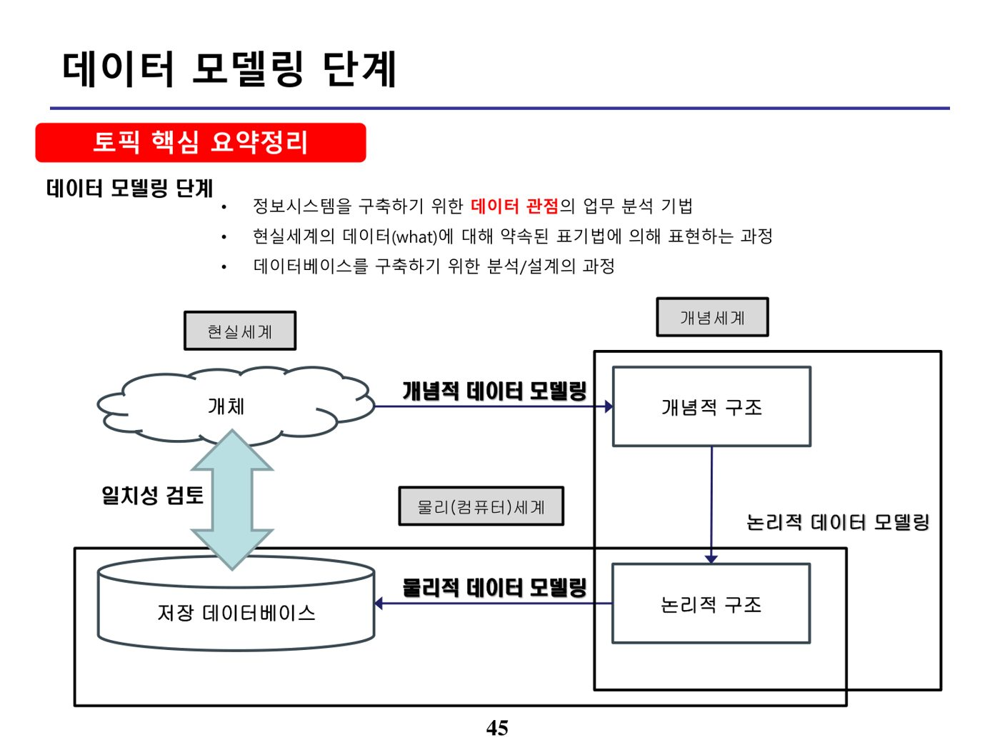
데이터베이스 설계는 데이터 모델링을 핵심 기법으로 사용하여 사용자 요구사항을 분석하고, 사용자가 요구하는 정보를 제공할 수 있도록 데이터베이스 구조와 접근 방법 등을 정의하는 것이다. 데이터 모델링은 이 과정에서의 핵심 기법으로, 사용자 요구사항을 분석하고 필요한 데이터 요소를 도출하여 적절한 데이터 구조를 정의하는 도구이며, 개체-관계 모델링(Entity-Relationship Modeling) 기법이 대표적이다.
| 단계 | 주요 내용 |
|---|---|
| 개념적 모델링 | 핵심 엔티티를 먼저 추출하고 그들 간의 관계를 생성하여 전체 데이터 모델의 골격을 생성하는 과정. 기업이 사용하는 데이터의 최상위 집합인 주제영역을 정의 |
| 논리적 모델링 | 데이터의 구조와 무결성을 함께 고려하여 상세한 속성·정규화를 진행하는 단계 |
| 물리적 모델링 | 각 DBMS의 특성을 고려하여 데이터베이스 저장 구조를 변환하는 모델링 |
14. 이상 현상 (원본 p.49-52)
| 구분 | 내용 |
|---|---|
| 정의 | 잘못 설계된 데이터베이스 릴레이션에 관계연산을 적용할 때, 데이터 불일치·데이터 중복·데이터 손실 등 원치 않는 결과가 도출되는 현상. 릴레이션 조작 시(입력·수정·삭제) 속성 간 중복 및 종속 관계로 인해 발생하는 비합리적인 현상 |
| 발생 원인 | 여러 가지 종류의 사실들을 하나의 릴레이션으로 표현하려 하기 때문에 발생하며, Attribute 간에 존재하는 여러 종속 관계를 하나의 릴레이션으로 표현할 때 발생. 즉 속성 간 존재하는 여러 종속 관계에 대해 정규화가 실행되지 않았기 때문 |
| 유형 | 내용 |
|---|---|
| 삽입 이상(Insertion Anomaly) | 특정 tuple을 삽입하려 할 때 원하지 않는 불필요한 데이터도 함께 삽입해야 하는 현상. 예: 새 학생을 추가할 때 불필요한 성적을 함께 입력해야 함 |
| 삭제 이상(Deletion Anomaly) | 특정 tuple을 삭제할 경우 유지되어야 하는 정보까지도 함께 삭제되는 연쇄 삭제 현상. 예: 특정 학생 정보를 삭제할 경우 해당 학생만 수강한 과목 정보도 함께 삭제됨 |
| 갱신 이상(Update Anomaly) | 특정 속성값 갱신 시 중복 저장된 속성값 중 일부만 갱신하고 나머지는 갱신하지 않아 발생하는 데이터 불일치 현상. 예: 학생이 이사하여 주소가 변경되었을 때 중복된 행 중 일부만 수정하면 불일치 발생 |
15. 반정규화 (원본 p.53-57)
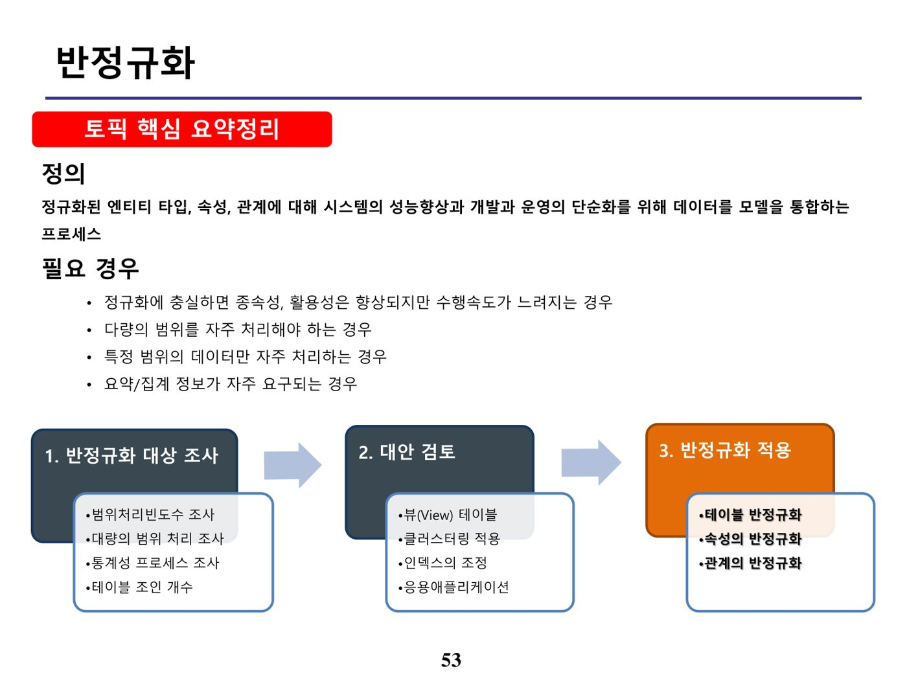
| 절차 | 방법 | 설명 |
|---|---|---|
| 1. 반정규화 대상 조사 | 범위 처리 빈도수 조사 | 자주 사용되는 테이블에 접근하는 프로세스 수가 많고, 항상 일정한 범위만을 조회하는 경우 |
| 대량의 범위처리 조사 | 테이블에 대량의 데이터가 있고 대량의 데이터 범위를 자주 처리하는 경우, 처리 범위를 일정하게 줄이지 않으면 성능을 보장할 수 없는 경우 | |
| 통계성 프로세스 조사 | 통계성 프로세스로 통계 정보를 산출할 때 별도의 통계 테이블(반정규화 테이블)을 생성 | |
| 테이블 조인 개수 조사 | 테이블에 지나치게 많은 조인(Join)이 걸려 데이터 조회 작업이 기술적으로 어려운 경우 뷰(View)를 사용 | |
| 2. 대안 검토 | 뷰(View) 테이블 | 지나치게 많은 조인이 걸려 조회가 어려운 경우 뷰(View)를 사용 |
| 클러스터링 적용 | 대량의 데이터를 특정 클러스터링 팩터에 의해 저장 방식을 다르게 하는 방법(조회 중심 테이블에만 적용 가능) | |
| 인덱스 적용 | 인덱스를 통해 성능을 충분히 확보할 수 있다면 인덱스 조정으로 반정규화를 회피 | |
| 응용 애플리케이션 | 응용 애플리케이션의 로직을 변경함으로써 성능을 향상 | |
| 3. 반정규화 적용 | 테이블, 속성, 관계의 반정규화 기법을 적용 | |
| 구분 | 기법 | 설명 |
|---|---|---|
| 테이블 | 테이블 병합 | 조인되는 경우가 많아 테이블을 합치는 것이 성능 향상에 효율적일 경우 적용(1:1, 1:M, Super/Sub Type 관계 테이블 병합) |
| 테이블 분할 | 특정 속성들만 집중적으로 접근할 경우 수직분할(특정 속성만 접근이 잦을 때 컬럼 분리) 또는 수평분할(연도별 이력 조회 등 Row별 구분)을 적용. 접근 빈도·잠김 현상·경합 현상은 감소하지만 전체 조회 시 UNION이 필요해 성능이 느려질 수 있음 | |
| 테이블 추가 | 중복테이블(원격조인 제거), 통계테이블(SUM·AVG 등 사전 계산), 이력테이블, 부분테이블(자주 이용하는 컬럼만 모은 별도 테이블) 등 | |
| 컬럼 | 중복컬럼 추가 | 조인을 감소시키기 위해 중복된 컬럼을 추가 |
| 파생컬럼 추가 | 트랜잭션 처리 시점에 계산하면 성능이 저하되는 값을 미리 계산해 컬럼으로 추가 | |
| 이력 테이블 컬럼 추가 | 대량 데이터에서 특정 시점·최근 값 조회 시 성능저하 예방을 위해 이력테이블에 기능성 컬럼 추가 | |
| PK에 의한 컬럼 추가 | 복합 의미를 갖는 PK를 단일 속성으로 구성하였을 경우 발생 | |
| 관계 | 중복관계 추가 | 여러 경로의 조인으로 인한 성능저하를 예방하기 위해 추가적인 관계를 맺는 방법 |
16. 집계함수 (원본 p.58-61)
| 집계함수 | 사용 목적 |
|---|---|
| COUNT(*) | NULL 값을 포함한 행의 수를 출력 |
| COUNT(표현식) | 표현식의 값이 NULL이 아닌 행의 수를 출력 |
| SUM([DISTINCT|ALL] 표현식) | 표현식의 값이 NULL이 아닌 합계를 출력 |
| AVG([DISTINCT|ALL] 표현식) | 표현식의 값이 NULL이 아닌 평균을 출력 |
| MAX / MIN([DISTINCT|ALL] 표현식) | 표현식의 최댓값 / 최솟값을 출력 |
| STDDEV([DISTINCT|ALL] 표현식) | 표현식의 표준편차를 출력 |
| VARIANCE([DISTINCT|ALL] 표현식) | 표현식의 분산을 출력 |
GROUP BY 절은 SQL문에서 FROM절과 WHERE절 뒤에 오며, 데이터들을 작은 그룹으로 분류해 소그룹에 대한 항목별 통계 정보를 얻을 때 사용한다. 집계 함수의 통계 정보는 NULL 값을 가진 행을 제외하고 수행되며, GROUP BY 절에서는 ALIAS를 사용할 수 없다. 집계함수는 WHERE절에는 사용할 수 없고, HAVING절·SELECT절·ORDER BY절에서 사용 가능하다. HAVING절은 GROUP BY 절의 기준 항목이나 소그룹의 집계 함수를 이용한 조건을 표시할 수 있으며, GROUP BY 절로 만들어진 소그룹별 집계 데이터 중 HAVING절 조건을 만족하는 내용만 출력한다.
17. 비용 기반 옵티마이저(CBO) (원본 p.62-64)
CBO(Cost Based Optimizer)는 SQL문을 처리하는 데 필요한 비용이 가장 적은 실행계획을 선택하는 방식이다. 비용이란 SQL문을 처리하기 위해 예상되는 소요시간 또는 자원 사용량을 의미하며, 비용을 예측하기 위해 테이블·인덱스·컬럼 등의 객체 통계정보와 시스템 통계정보를 이용한다. 통계정보가 없으면 CBO는 정확한 비용 예측이 불가능해져 비효율적인 실행계획을 생성하므로, 정확한 통계정보를 유지하는 것이 비용 기반 최적화의 핵심이다.
| 구성요소 | 설명 |
|---|---|
| 질의 변환기 | 사용자가 작성한 SQL문을 처리하기에 보다 용이한 형태로 변환하는 모듈 |
| 대안계획 생성기 | 동일한 결과를 생성하는 다양한 대안 계획을 생성하는 모듈. 연산의 적용 순서 변경, 연산 방법 변경, 조인 순서 변경 등을 통해 생성 |
| 비용 예측기 | 대안계획 생성기가 생성한 대안 계획의 비용을 예측하는 모듈. 연산의 중간 집합 크기 및 결과 집합의 크기·분포 등의 예측이 정확해야 함 |
18. SQL Blind Injection (원본 p.65-68)
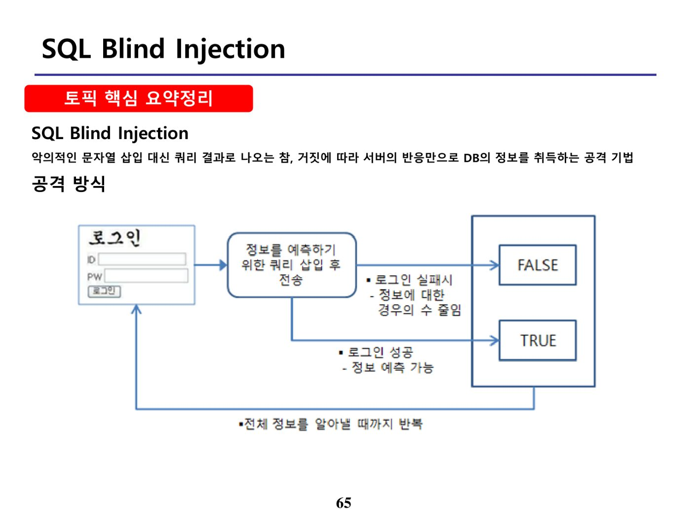
SQL Blind Injection은 SQL Injection 공격 중 화면에 에러 메시지 등 직접적인 정보가 노출되지 않는 경우, 쿼리를 삽입했을 때 나타나는 참(TRUE)과 거짓(FALSE)에 대한 반응 차이를 이용해 정보를 알아내는 공격 기법이다.
| 구분 | 내용 |
|---|---|
| 공격 기법 | 추론 기법(Boolean-based Blind), 외부 대역 채널(Out-of-band) 기법 등 |
| 사용 조건 | 쿼리를 삽입하였을 때 쿼리의 참·거짓에 대한 반응을 구분할 수 있을 때 사용 |
| 대응 방법 | Secure Coding, 최소한의 권한 부여, Static SQL(정적 SQL) 사용 등 |
19. CRISP-DM (원본 p.69-72)
데이터를 수집해서 바로 활용하기는 어려우며, 수집 후 원하는 형태로 정제한 다음 분석하는 작업이 필요하다. 빅데이터 분석의 일반적인 흐름은 데이터 수집 → 데이터 정제 → 데이터 분석 → 데이터 정보화 → 정보 활용의 순서로 진행된다.
CRISP-DM(Cross Industry Standard Process for Data Mining)은 이러한 분석 과정을 6단계의 순환적 방법론으로 구체화한 빅데이터 분석 표준 방법론이다.
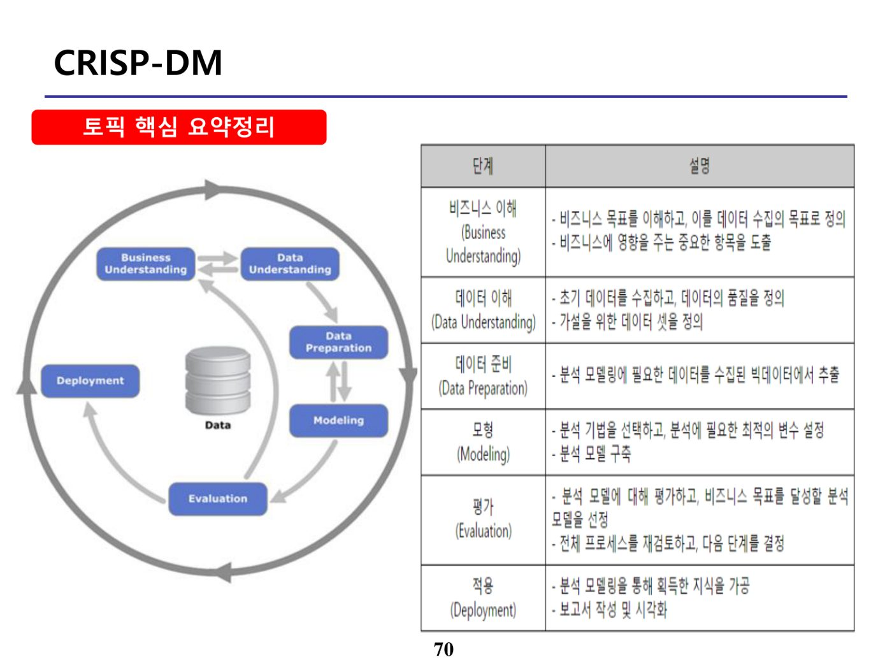
| 단계 | 설명 |
|---|---|
| 비즈니스 이해(Business Understanding) | 비즈니스 목표를 이해하고 이를 데이터 수집의 목표로 정의 |
| 데이터 이해(Data Understanding) | 초기 데이터를 수집하고, 데이터의 속성을 이해하기 위한 활동을 수행 |
| 데이터 준비(Data Preparation) | 분석 모델링에 필요한 데이터를 수집된 빅데이터에서 추출·가공 |
| 모델링(Modeling) | 다양한 모델링 기법을 선택하고 적용해 분석 모델을 구축 |
| 평가(Evaluation) | 분석 모델에 대해 평가하고, 비즈니스 목표를 달성할 분석 모델을 선정 |
| 전개/적용(Deployment) | 보고서 작성 및 시각화 수행 등 분석 결과를 실무에 적용 |
20. 빅데이터 분석 기법 (원본 p.73-75)
데이터 분석을 위해서는 수집한 데이터를 가장 잘 아는 전문가의 경험에 의해 다양하게 분석될 수 있으며, 아래의 기본 방법을 주로 사용한다.
| 기법 | 내용 |
|---|---|
| 연관규칙학습(Association Rule Learning) | 상품이나 서비스 간의 관계를 살펴봄 |
| 유전 알고리즘(Genetic Algorithms) | 다윈의 적자생존 이론을 기본으로 살펴봄 |
| 회귀분석(Regression Analysis) | 변수 간의 상호 관련성을 규명하고 변화를 예측하며 살펴봄 |
| 유형분석(Classification Tree Analysis) | 데이터의 유형을 분류하여 범주를 찾아내는 통계적 분류로 살펴봄 |
| 기계학습(Machine Learning) | 훈련 데이터를 기초로 새롭게 입력되는 값의 예측 결과를 살펴봄 |
| 소셜네트워크 분석(Social Network Analysis) | 특정한 부분과 다른 부분과의 관계를 파악하여 살펴봄 |
| 감정분석(Sentiment Analysis) | 특정 주제나 사람의 감정을 분석하여 살펴봄 |
- 다윈의 적자생존 이론을 기본으로 하는 기법은 기계학습이 아니라 유전 알고리즘(Genetic Algorithms)이다.
- 변수 간 상호 관련성을 규명하고 변화를 예측하는 기법은 연관규칙학습이 아니라 회귀분석(Regression Analysis)이다.
- 특정 부분과 다른 부분과의 관계를 파악하는 기법은 감정분석이 아니라 소셜네트워크 분석(Social Network Analysis)이다.
📚 전체 기출·예상문제 (20문항) — 원문 수록
본 강좌 원본 PDF는 각 토픽마다 문제 슬라이드와 정답 공개 슬라이드가 별도로 반복 수록되어 있습니다. 아래는 중복을 제거하고 문항별로 1개씩 정리한 것으로, 문제·선택지·정답·해설은 원문 내용을 빠짐없이 반영했습니다.